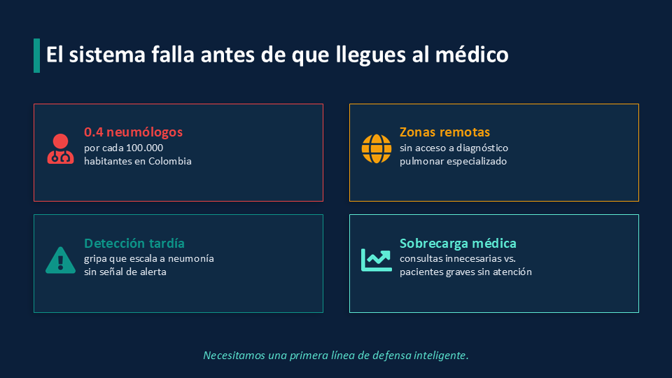
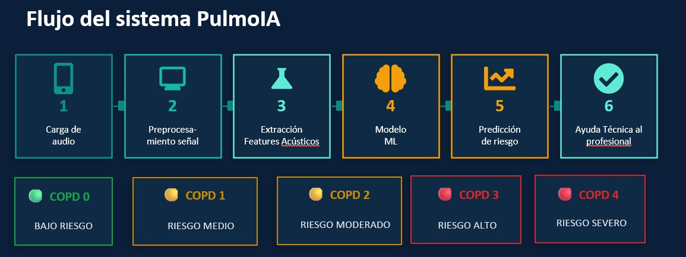
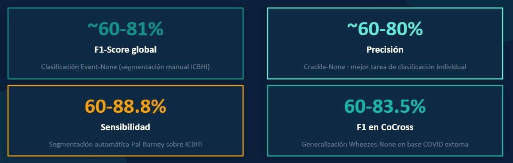
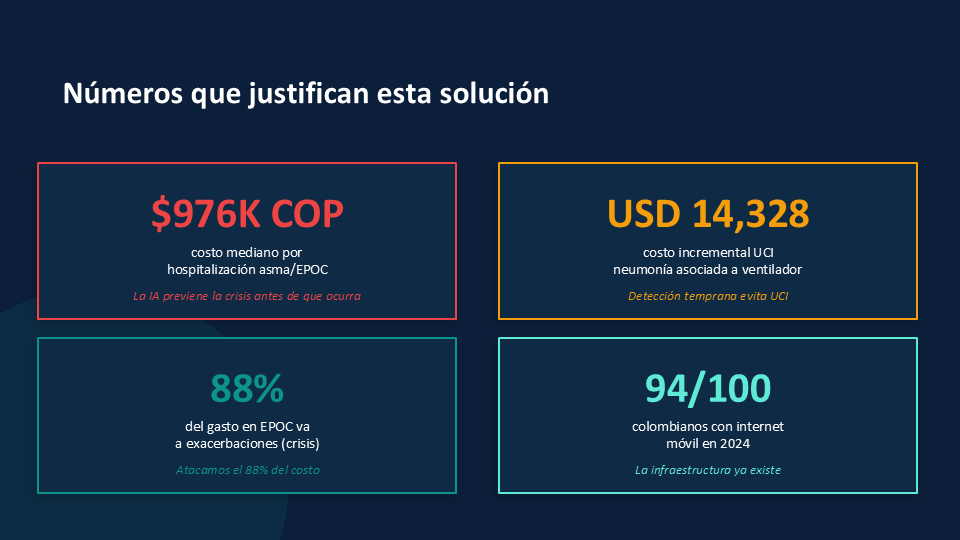
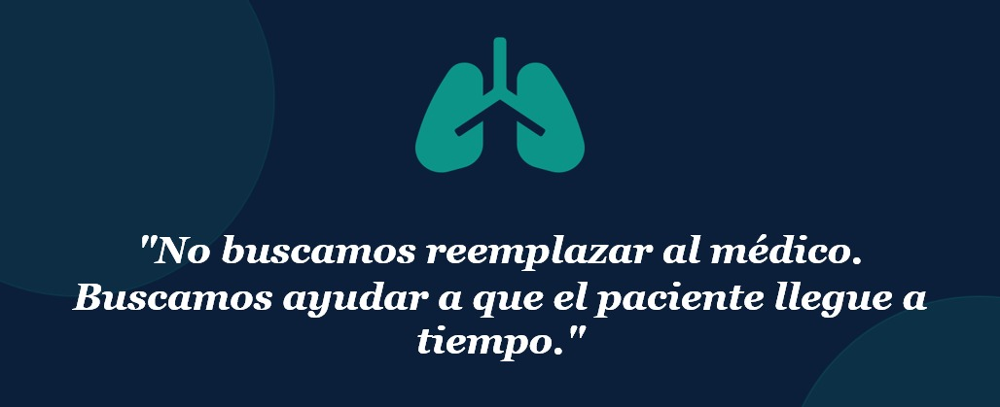

PulmoIA analiza los sonidos de tu auscultación y predice tu nivel de riesgo respiratorio, orientando a médicos y pacientes antes de una crisis.

Adjunta la grabación pulmonar del paciente para iniciar el análisis de triage EPOC.
o haz clic para seleccionar desde tu dispositivo
El modelo de ML está procesando los patrones acústicos del audio
Registros de auscultaciones previas
| Fecha | Paciente | Edad | Nivel EPOC | Confianza | Recomendación | Rol | Acciones |
|---|---|---|---|---|---|---|---|
| 21 May 2026 | María García L. | 58 | COPD2 · Moderado | 84% | Acudir al médico | Médico | |
| 18 May 2026 | Carlos Restrepo | 65 | COPD3 · Grave | 91% | Consulta urgente | Médico | |
| 15 May 2026 | Ana Torres M. | 42 | COPD1 · Leve | 77% | Observación | Paciente | |
| 10 May 2026 | Luis Mendoza P. | 71 | COPD4 · Muy grave | 96% | 🚨 Emergencia | Médico | |
| 05 May 2026 | Sofía Ramírez | 35 | COPD0 · Bajo riesgo | 88% | Seguimiento normal | Paciente |
PulmoIA es un software de dispositivo médico que integra análisis de procesamiento de señales con inteligencia artificial para ayudar al profesional a detectar de manera temprana riesgos de enfermedades respiratorias.

Es un sistema que combina DSP con IA. PulmoIA funciona aplicando técnicas de procesamiento digital de señales, validadas en investigaciones previas con el fin de obtener información de los audios y, a través de su modelo de inteligencia artificial, obtener patrones que permiten clasificar los sonidos pulmonares de acuerdo a su riesgo de COPD.

PulmoIA es un sistema de inteligencia artificial que mejora de manera continua gracias al registro de los médicos que avalan su clasificación. De manera inicial, PulmoIA presenta las siguientes métricas de rendimiento, que de acuerdo con las investigaciones recientes, son métricas que están a la vanguardia y presentan una buena generalización del complejo problema que representan los sonidos pulmonares grabados por auscultación.
Las soluciones existentes son de pago. PulmoIA tiene su codigo abierto: cualquier IPS, hospital o desarrollador puede usarlo sin costo adicional al de mantenimiento en sus servidores propios.
Modelos entrenados con contexto local: altitud, exposición a humo de leña, ruido ambiental urbano. No es un software extranjero genérico.
Colombia ya es miembro del IMDRF. Existe un camino regulatorio claro para Software como Dispositivo Médico bajo la política de 2024.
Ahora el personal técnico puede detectar sin necesidad de habilidad especializada una gripa riesgosa, disminuyendo el tiempo operacional para detección de la enfermedad.

A la larga PulmoIA puede mejorar su tecnología DSP + IA implementando técnicas que permitan filtrar audios grabados en entornos muy ruidosos, lo cual mejorará el entrenamiento de los modelos de IA y por tanto sus métricas de rendimiento.
PulmoIA puede permitir la conectividad mundial de manera que diferentes neumólogos del mundo puedan ayudar a diagnosticar con mayor rapidez los posibles COPD únicamente escuchando la auscultación y ayudando a mejorar las métricas y precisión de clasificación de PulmoIA.

Agradecemos profundamente a los docentes y directivos de la Especialización en Ciencia de Datos e Inteligencia Artificial de la Universidad de Medellín, cuya orientación académica, conocimiento técnico y acompañamiento constante fueron fundamentales en el desarrollo de PulmoIA. Este proyecto es el resultado directo de la formación recibida y del compromiso institucional con la innovación tecnológica aplicada a la salud pública colombiana.